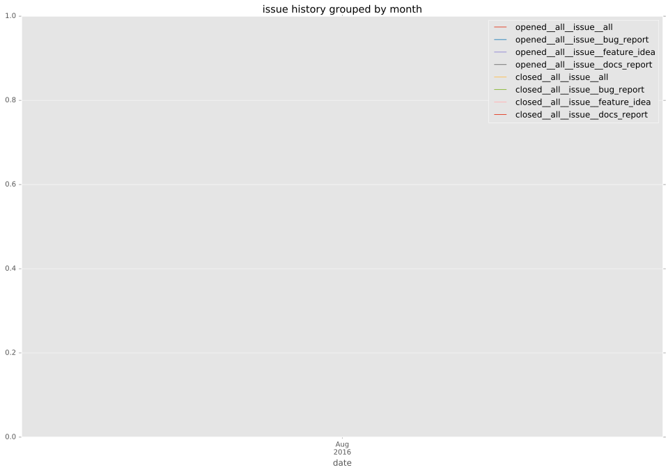
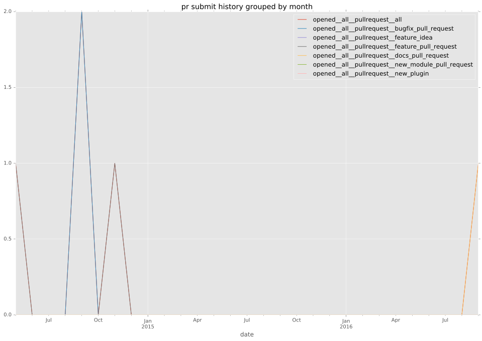
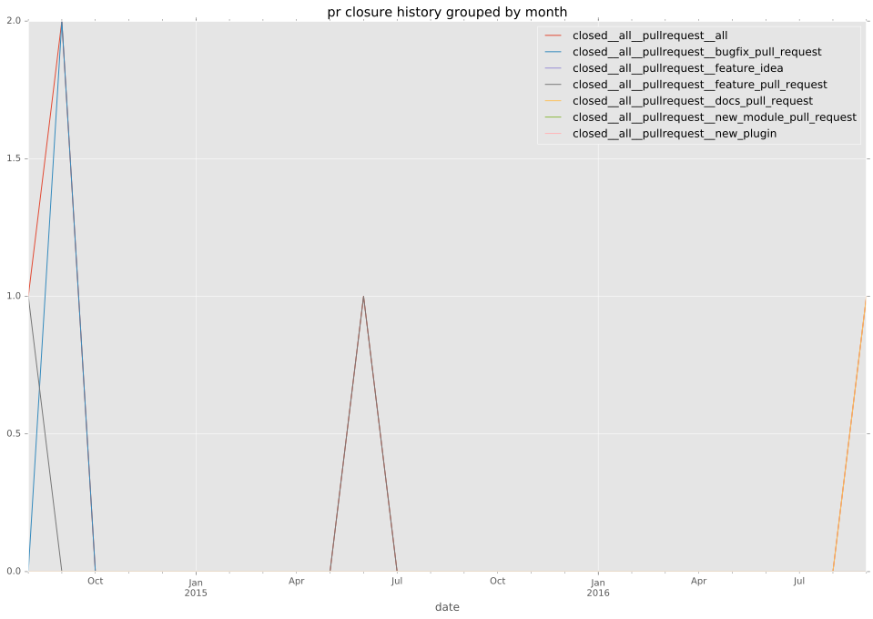

authors
maintainers
- mischapeters
contributors
- jimi-c : 29 commits
- swimlappy : 9 commits
- gerva : 1 commits
- bcoca : 1 commits
- gundalow : 1 commits
total issue counts
feature pull request: 2
docs report: 1
pullrequest: 6
docs pull request: 1
bugfix pull request: 3
issue: 1
issue history

pullrequest history


days open by issue type
bugfix pull request
count: 4
std: 11.2657297441
min: 0
max: 20
median: 10.5
mean: 10.25
all
count: 11
std: 72.3585767989
min: 0
max: 187
median: 20.0
mean: 57.1818181818
pullrequest
count: 0
std: nan
min: nan
max: nan
median: nan
mean: nan
docs pull request
count: 2
std: 0.0
min: 0
max: 0
median: 0.0
mean: 0.0
docs report
count: 1
std: nan
min: 32
max: 32
median: 32.0
mean: 32.0
feature pull request
count: 4
std: 55.4256258422
min: 91
max: 187
median: 139.0
mean: 139.0
issue
count: 0
std: nan
min: nan
max: nan
median: nan
mean: nan
closures grouped by total days open